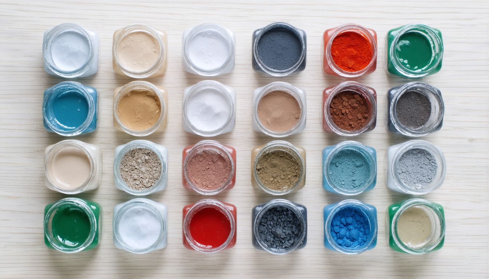
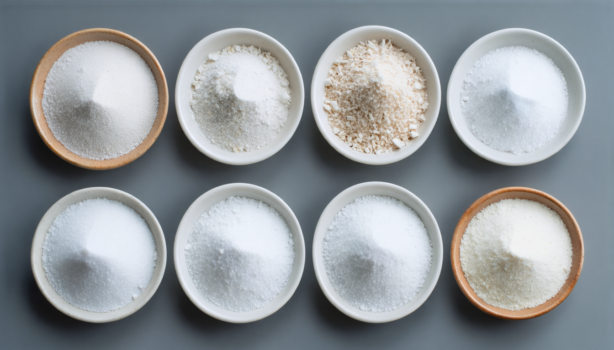
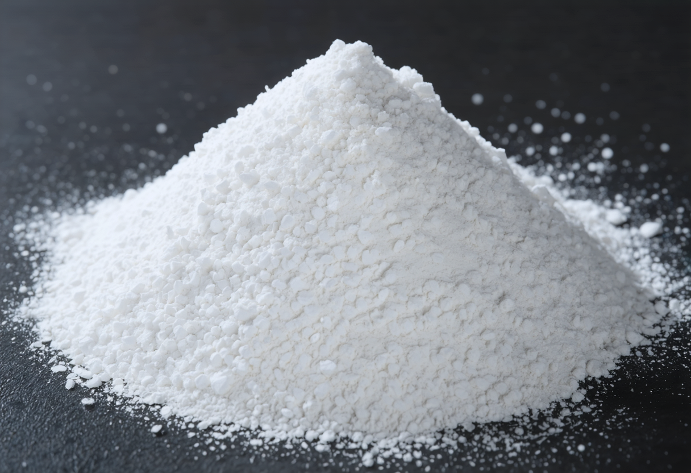
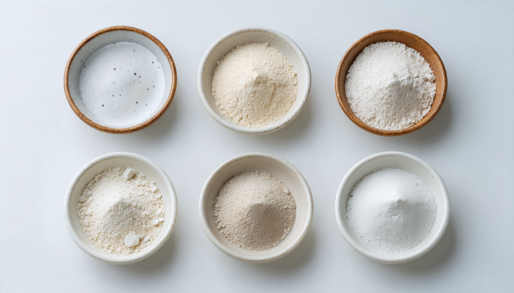
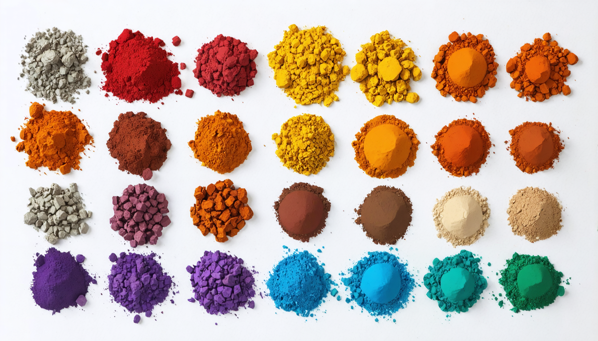
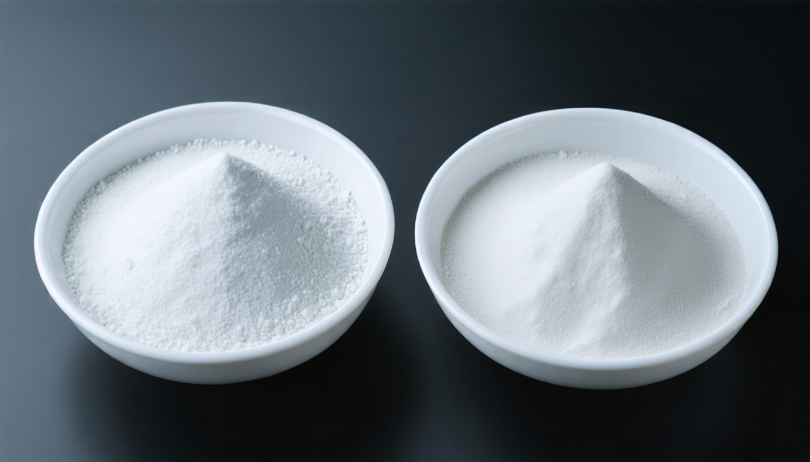
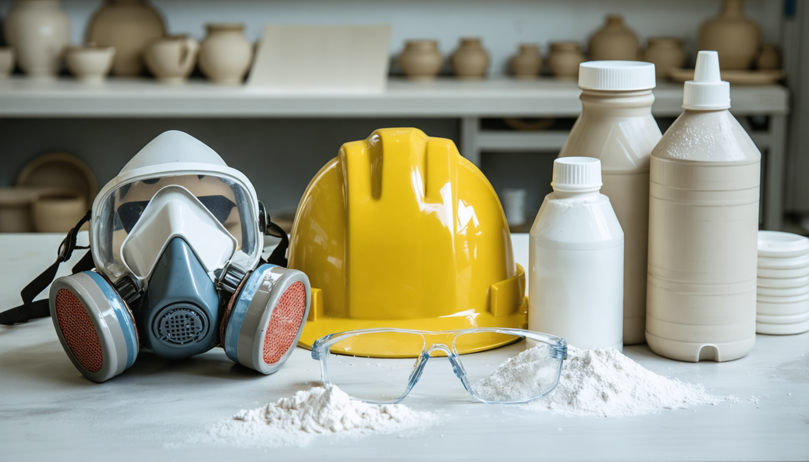
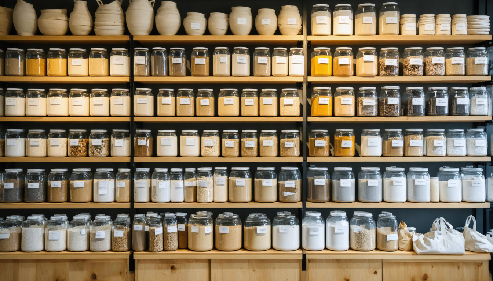

유약 재료의 역할과 중요성
유약은 단순히 몇 가지 가루를 섞는 것이 아니라, 각 재료가 가진 고유한 특성과 역할을 이해하고 조합해야 원하는 아름다운 결과물을 얻을 수 있습니다. 마치 요리에서 각각의 재료가 맛과 풍미를 더하는 것처럼, 유약 재료들도 각자의 역할을 수행하며 도자기 표면에 특별한 변화를 만들어냅니다.
유약의 필수 3요소
유약을 만들기 위해서는 다음 세 가지 기본 재료가 필수적으로 필요합니다. 이 세 가지 요소는 유약이 녹고, 유리처럼 변하며, 도자기에 안정적으로 붙어 있도록 하는 핵심적인 역할을 합니다.
융제 (Flux): 녹는 온도를 낮추는 조력자
융제는 유약의 주성분인 규석(실리카)의 녹는점을 낮춰주는 역할을 합니다. 규석은 매우 높은 온도에서 녹기 때문에, 융제가 없으면 일반적인 도자기 소성 온도에서는 유약이 제대로 녹지 않습니다. 융제는 고온에서 녹아 다른 재료들을 녹이는 역할을 하여 유약 전체가 액체 상태로 변하는 것을 돕습니다.
주요 융제 종류
장석 (Feldspar)
탄산칼슘 (Whiting)
붕사 (Borax)
- 장석 (Feldspar): 유약에서 가장 흔하게 사용되는 융제입니다. 칼륨장석, 나트륨장석 등 다양한 종류가 있으며, 유약의 녹는점과 점도를 조절하는 데 중요한 역할을 합니다. 은은하고 안정적인 용융을 도와주며, 다양한 색상의 발색에도 영향을 미칩니다.
- 탄산칼슘 (Whiting, CaCO₃): 석회석 가루로, 비교적 높은 온도에서 융제 역할을 하며, 유약의 불투명도를 높이고 매트한 질감을 만드는 데 사용되기도 합니다.
- 소다회 (Soda Ash, Na₂CO₃): 낮은 온도에서 강력한 융제 역할을 하지만, 과량 사용 시 유약이 너무 잘 흘러내리거나 불안정해질 수 있습니다. 주로 저온 소성 유약에 사용됩니다.
- 칼륨장석 (Potash Feldspar, KAlSi₃O₈): 나트륨장석보다 약간 높은 온도에서 녹으며, 부드럽고 안정적인 용융을 도와줍니다. 특정 색상 발색에 더 효과적인 경우가 있습니다.
- 붕사 (Borax, Na₂B₄O₇·10H₂O): 낮은 온도에서 융제 역할을 하며, 유약의 표면 장력을 낮춰 매끄러운 표면을 만드는 데 도움을 줍니다. 저온 소성 유약이나 특수 효과 유약에 사용됩니다.
- 탄산리튬 (Lithium Carbonate, Li₂CO₃): 매우 강력한 융제이며, 낮은 온도에서 유약의 용융을 촉진하고 특정한 색상 발색에 영향을 미칩니다. 사용량이 적더라도 효과가 크므로 주의해서 사용해야 합니다.
유리질형성제 (Glass Former): 유리의 뼈대를 만드는 핵심 재료
유리질형성제는 유약이 녹아서 식을 때 유리처럼 투명하거나 반투명한 막을 형성하는 데 가장 중요한 역할을 합니다. 가장 대표적인 유리질형성제는 바로 규석 (Silica, SiO₂) 또는 석영 (Quartz)의 매우 고운 가루입니다.
규석은 유약의 기본적인 골격을 이루며, 유약의 투명도, 광택, 경도, 내화학성 등을 결정짓습니다. 유약 레시피에서 가장 많은 비율을 차지하는 경우가 많습니다.
안정제 (Stabilizer): 유약의 형태를 안정적으로 유지시키는 역할
안정제는 녹은 유약이 소성 중에 흘러내리거나, 냉각 후 표면이 갈라지는 현상을 막고, 유약의 내구성과 접착력을 높여주는 역할을 합니다.
주요 안정제 종류
- 점토 (Clay): 고령토(Kaolin), 백토 등 다양한 종류의 점토가 안정제 역할을 합니다. 점토는 수분을 흡수하여 가소성을 가지게 하므로 유약의 시유 작업을 용이하게 하고, 소성 시에는 알루미나 성분이 안정제 역할을 합니다.
- 고령토 (Kaolin, Al₂Si₂O₅(OH)₄): 순수한 형태의 점토로, 유약에 백색도와 불투명도를 부여하고, 유약의 점도를 조절하여 흘러내림을 방지하는 데 사용됩니다.
- 수산화알루미늄 (Alumina Hydrate, Al(OH)₃): 순수한 알루미나 성분으로, 유약의 내구성과 경도를 높이는 데 효과적입니다. 고령토보다 더 강력한 안정제 역할을 하지만, 시유 작업성은 떨어질 수 있습니다.
유약의 색과 효과를 더하는 재료
위의 세 가지 필수 요소 외에도 유약에 다양한 색상과 특별한 효과를 부여하기 위해 여러 가지 재료들이 사용됩니다.
색 발색제 (Colorants): 아름다운 색을 입히는 마법 가루
금속 산화물은 고온에서 특정한 색을 발현하는 성질을 가지고 있습니다. 이를 이용하여 유약에 원하는 색상을 입힐 수 있습니다.
산화철 (Iron Oxide)
산화구리 (Copper Oxide)
산화코발트 (Cobalt Oxide)
이산화망간 (Manganese Dioxide)
주요 색 발색제
- 산화철 (Iron Oxide, Fe₂O₃): 농도와 소성 분위기에 따라 노란색, 갈색, 붉은색, 검은색, 심지어 녹색까지 다양한 색상을 낼 수 있습니다.
- 산화구리 (Copper Oxide, CuO): 산화 분위기에서는 녹색이나 청록색을, 환원 분위기에서는 붉은색이나 금속 광택을 낼 수 있습니다.
- 산화코발트 (Cobalt Oxide, CoO): 소량으로도 강렬하고 아름다운 푸른색을 냅니다.
- 산화크롬 (Chromium Oxide, Cr₂O₃): 주로 녹색을 내지만, 유약의 조성에 따라 다른 색상을 낼 수도 있습니다.
- 이산화망간 (Manganese Dioxide, MnO₂): 갈색, 보라색, 검은색 등을 낼 수 있으며, 독특한 얼룩 효과를 만들기도 합니다.
불투명제 (Opacifiers): 빛을 가려주는 하얀 가루
불투명제는 유약에 불투명한 성질을 부여하여 빛을 통과시키지 않도록 만듭니다.
주요 불투명제
- 산화주석 (Tin Oxide, SnO₂): 전통적으로 사용되어 온 불투명제로, 부드럽고 밝은 흰색을 냅니다.
- 산화지르코늄 (Zirconium Oxide, ZrO₂): 산화주석보다 더 강력한 불투명 효과를 내며, 내구성이 뛰어납니다.
기타 첨가제
- 산화티타늄 (Titanium Dioxide, TiO₂): 유백색이나 황색을 내기도 하고, 결정 유약의 형성을 돕기도 합니다.
- 루틸 (Rutile, TiO₂의 한 형태): 유약 표면에 독특한 얼룩이나 흐름 효과를 만들어냅니다.
- 벤토나이트 (Bentonite): 유약 원료의 침전을 막고 시유 시 접착력을 높여주는 역할을 합니다.
유약 재료 취급 시 주의사항
유약 재료는 대부분 분말 형태이므로, 취급 시 다음 사항에 유의해야 합니다:
- 마스크 착용: 미세한 분말을 흡입하지 않도록 반드시 방진 마스크를 착용하세요.
- 보안경 착용: 가루가 눈에 들어가지 않도록 보안경을 착용하세요.
- 장갑 착용: 피부에 직접 닿지 않도록 장갑을 착용하는 것이 좋습니다.
- 환기: 작업 공간은 환기가 잘 되도록 유지하세요.
- 어린이 및 반려동물 접근 금지: 유약 재료는 먹거나 만지지 않도록 안전하게 보관하세요.
유약 재료 구매 가이드
유약 재료는 주로 다음과 같은 곳에서 구매할 수 있습니다:
- 도자기 전문 상점: 다양한 종류의 유약 재료를 직접 보고 구매할 수 있으며, 전문가의 조언을 얻을 수도 있습니다.
- 온라인 쇼핑몰: 편리하게 다양한 재료를 비교하고 구매할 수 있지만, 직접 품질을 확인하기 어려울 수 있습니다.
- 도예 공방: 일부 공방에서는 자체적으로 유약 재료를 판매하기도 합니다.
재료를 구매할 때는 필요한 양과 종류를 정확히 파악하고, 신뢰할 수 있는 판매처를 선택하는 것이 중요합니다. 초보자의 경우, 소량으로 포장된 재료를 먼저 구매하여 사용해 보고 점차 양을 늘려나가는 것이 좋습니다.